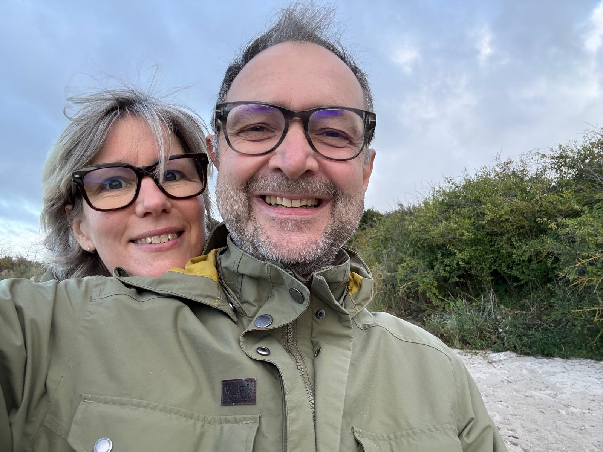
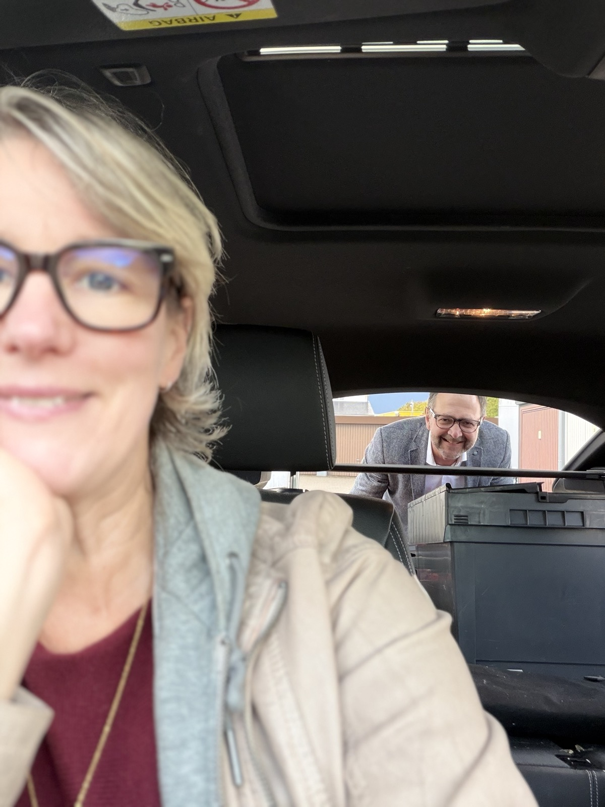
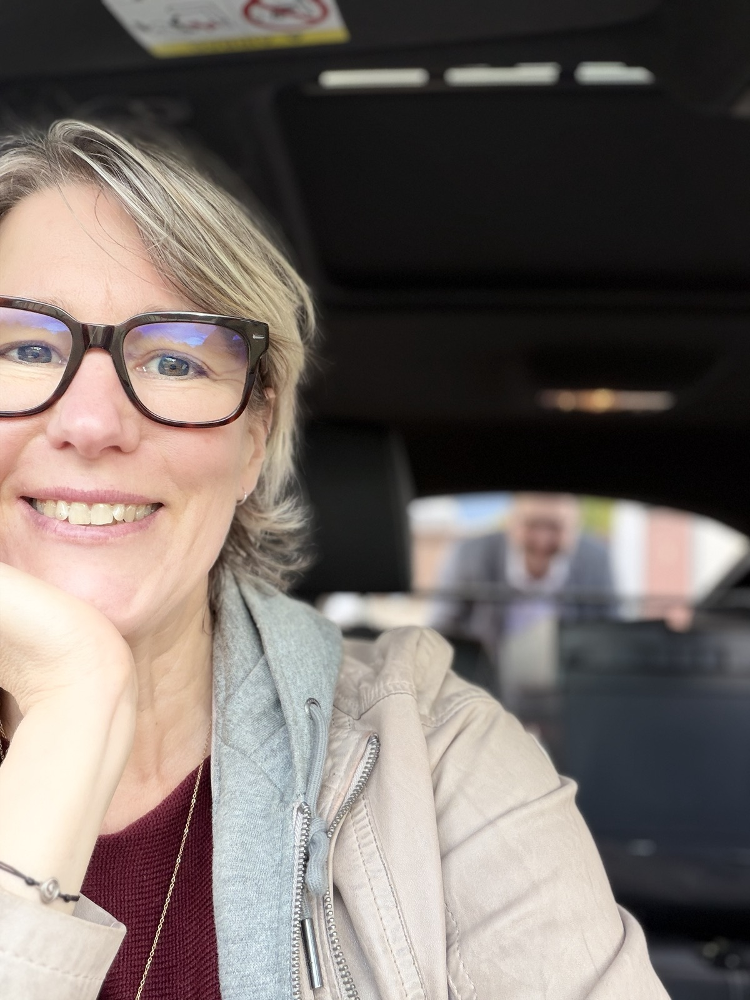
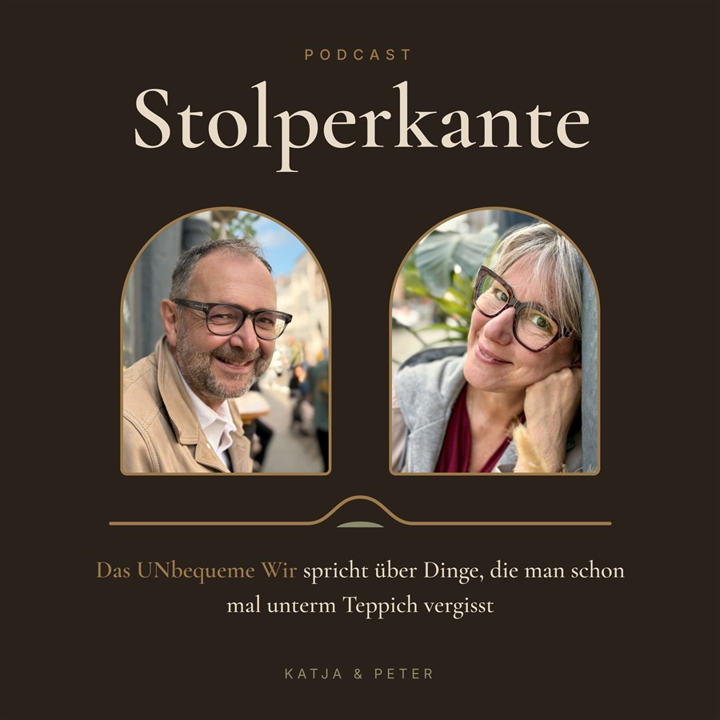

Paarcoaching für Paare zwischen 45 und 63
Ihr funktioniert gut.
Aber lebt ihr auch noch miteinander?
Wir sind Katja und Peter, selbst ein Paar. Wir sprechen aus, was bei euch seit Jahren unterm Teppich liegt, und bleiben dabei an eurer Seite.
Kostenfreies Erstgespräch buchen30 Minuten, online, ohne Verpflichtung.

Kommt dir das bekannt vor?
- "Es fehlt irgendwas, ich weiß aber nicht was."
- "Warum fühlt sich alles so leer an, obwohl mein Leben so voll ist?"
- "Wir leben nur noch als WG im selben Haushalt."
- "War das schon alles?"
Die Kinder sind aus dem Haus, der Job fordert, der Körper verändert sich. Ihr seid ein eingespieltes Team, aber über Gefühle, Nähe und Sex sprecht ihr kaum noch. Urlaub, Schweigen und Ratgeber haben es nicht gelöst. Weil es nie um die Sache selbst geht, sondern um den Frust darunter.
Über uns

Peter
Jahrelang Vorstand bei Banken, dazu Coaching- und Trainerausbildung. Er kennt Führung und Druck von innen und weiß, wie unbequem ehrliche Gespräche sind und wie sehr sie sich lohnen.

Katja
Heilpraktikerin für Psychotherapie, Transformationstherapeutin, Tantra-Begleiterin und Reiki-Meisterin. 29 Jahre Arbeit mit Menschen. Sie schaut unter die Oberfläche und hält aus, was dort auftaucht.
Wir sind selbst ein Paar und werden mit denselben Themen konfrontiert wie ihr. Wir bleiben nicht stehen und arbeiten auf Augenhöhe an uns. Wir haben keine fertigen Erfolgsgeschichten zu verkaufen. Wir haben unsere eigene.
Warum UNbequem?
Weil wir unbequeme Fragen stellen und auch miteinander unbequem sind, wenn es um Komfortzonen und alte Themen geht. Wir glauben nicht, dass Beziehung immer leicht sein muss. Und nicht, dass Harmonie über allem steht. Wir glauben, dass sich Zeit, Gedanken, Körperlichkeit und Gefühle lohnen, die ihr in euch investiert.
So arbeiten wir
Als Paar
Ihr kommt gemeinsam zu uns beiden. Wir schauen von der Oberfläche in die Tiefe, sortieren mit euch und sprechen aus, was auffällt.
Einzeln
Frauen arbeiten mit Katja, Männer mit Peter. Auch dann, wenn dein Partner (noch) nicht mitkommen will.
Online oder vor Ort
Abends und am Wochenende, damit es in euren Alltag passt.
Euer Part
Wir begleiten und helfen beim Reflektieren. Fühlen und Umsetzen müsst ihr selbst. Das nehmen wir euch nicht ab.
Podcast: Stolperkante

Das UNbequeme Wir spricht über Dinge, die man schon mal unterm Teppich vergisst.
Der Alltag läuft. Die Beziehung läuft nebenher. Und über das, was wirklich los ist, redet kaum noch jemand.
Wir reden über fehlende Nähe, Sex, Wechseljahre und Andropause, das leere Nest, Routine und all die Gespräche, die man sich lieber spart. Ehrlich, mit Humor und auf Augenhöhe. Ohne Schuldzuweisung und ohne Schönreden.
Wenn Du dich fragst "War das schon alles?", bist Du hier richtig. Den Teppich heben wir an, hinschauen musst Du selbst.
Die erste Folge entsteht gerade. Bald auf Spotify und Apple Podcasts.
Bleib in Kontakt
Wir sind ganz am Anfang und freuen uns, wenn ihr uns begleitet.